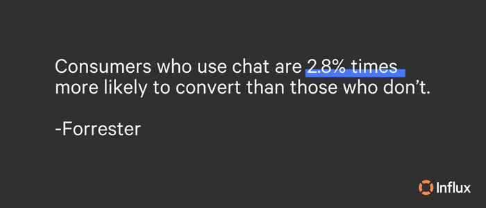
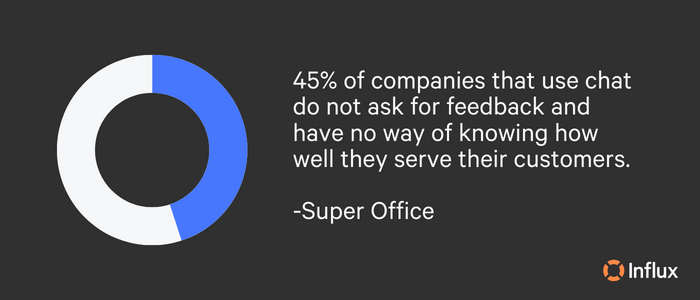
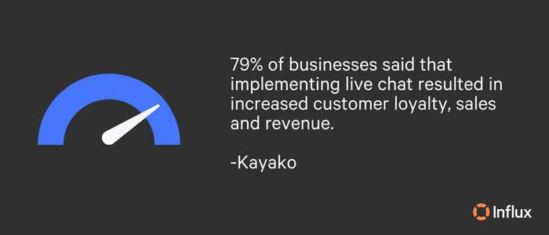
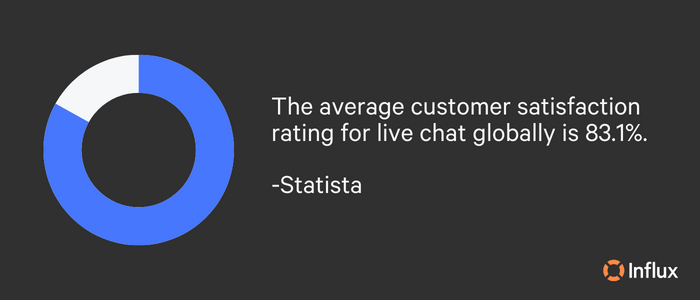

Live chat support assists customers throughout various touch points along the marketing and sales funnel. Whether you already offer live chat and are looking to optimize your support quality or you’re looking to begin offering live chat support to your visitors, our best practices for live chat will help you improve satisfaction, reduce response times, and increase conversions.
Benefits of quality live chat support
Effective live chat comes with significant benefits. One advantage of live chat is that many customers favor it. According to Tidio, 41% of customers prefer real-time customer service via live chat over other methods. This number is only expected to grow in the coming years. Compared to other avenues, such as email or call support, live chat is relatively faster and instantaneous, allowing visitors to receive answers right when they ask. The immediacy of real-time support can aid in building rapport and has the power to increase satisfaction and loyalty.
Another notable benefit of an excellent live chat experience is that it increases revenue. Quality live chat brings positive revenue results in a few ways. Goinflow noted that implementing live chat resulted in a 3.84% increase in conversion rates, with a 6% overall lift in revenue. On top of that, Forrester reported a 10% increase in average order value from customers who engaged in chat before making a purchase. Not only are customers more likely to buy from a company that offers live chat support, but they’re also more likely to return to that website. To recap: quality live chat boosts conversion rates and average order values resulting in significant profit increases.
Slow response times lead to high abandonment rates, but live chat can combat this. Overall, excellent live chat creates a better user experience, increases conversions, and boosts satisfaction. Now that you know the benefits of what quality live chat can do for your business, let’s put some action into making it happen.

Our top 5 live chat best practices
1. Enhance the customer experience
Where and when your live chat widget pops up matters. Carefully consider which pages you add live chat on. Preferably, place the widget on lead generation pages that customers may have questions about, such as pricing, product, contact, FAQs, and landing pages.
Designed to enhance – not distract from – the customer experience, your widget should be small and have a bright button that makes it simple for visitors to open the chat should they need it. Think: ‘I can see this is there, but it’s not in my way.’ You may notice that many chat boxes are on the lower right-hand side of the page. This placement is intentional since a user’s eyes automatically move to the ride side of the page once they click into a website.
Lastly, the chat’s availability status should be easy to see. If your live chat is unavailable 24/7, make it clear when support is available to avoid frustration. If you are looking to provide 24/7 support, Influx offers around-the-clock live chat solutions! The faster and more effectively you can communicate with customers, the better the customer experience.
2. Be concise but quick
Live chat should offer quick solutions, not fluff or ambiguous messages. The average live chat response time is 46 seconds. (Forbes) Even if a representative may not yet have a comprehensive solution to a customer’s question, simply acknowledging the message — and offering an approximate response time — can put customers at ease. Practice these tips to keep language succinct:
- Avoid unnecessary details: Agents should focus on providing the necessary information to answer the customer’s inquiry and avoid adding unnecessary details that can make the response confusing or lengthy.
- Keep sentences short: Short sentences are easier to read and understand. Get to the point with specificity.
- Use canned responses when appropriate: Canned replies are pre-written statements that allow agents to save time and respond more promptly. Avoid overusing them.
- Use bullet points: Sometimes, lengthy responses are necessary, such as a step-by-step process. Using bullet points can structure these responses and make it easier for the user to read and understand.
- Avoid jargon: Steer clear of vocabulary or technical phrases that the customer may not comprehend.
- Proofread: Before submitting replies, agents should proofread responses to ensure they are clear, concise, and error-free.
- Know the product: With in-depth product expertise, support representatives can rapidly determine the correct and most important response.
With a bit of practice, agents can follow these tips to provide concise and compelling live chat support, which can help improve customer satisfaction and reduce response time.
3. Offer a survey for feedback on the same channel
Customer feedback is always valuable. Post-chat surveys can be a great tool to collect, analyze, and measure customer feedback for increased satisfaction. Chat surveys show your visitors that you care about their experience and can reveal gaps in support to help you improve the service.
To create an effective post-chat survey, keep it short and avoid too many open-ended questions. It’s fine to have an open-ended text box at the end of the survey for any additional thoughts/feedback, but for maximum participation, stick with closed-ended questions, i.e., ratings or one-word answers. Ultimately, what matters is that you’re asking the right questions in the right way to assess the customer’s overall experience.

4. Build and train your team
Live chat is a distinct channel that requires a unique skill set to offer high-quality customer support. Your live chat team should be composed of agents who understand customer service well. Agents must know chat etiquette, grammar/use of language, and how to steer a conversation to stay on topic. Agents should have access to a knowledge base that contains information on common customer inquiries, product information, and troubleshooting guides that will help them provide accurate and timely responses.
Ensure your live chat support team understands the customer journey, which can impact responses. Since your live chat team is an extension of your business, and speaking directly with customers affects how they perceive your brand, it’s also vital to train representatives to maintain their composure. Customer de-escalation techniques are valuable for any support team. Before agents start using the chat software, they should receive proper training on how to use it effectively. Software training should include how to initiate and end chats, transfer chats, and use canned responses.
As your business scales, live chat is likely to grow. It can be tempting to turn to chatbots that are expensive, frustrating for customers, and sacrifice human elements. We understand how time-consuming live chat can be. Influx representatives are experts at live chat support. Our economical solutions power your live chat support for increased conversions and boosted satisfaction. Vitalize your live chat with 100% human-powered support!

5. Show empathy, and don’t be too formal
Empathy is the key to excellent customer support. A study by Dixa revealed that 96% of consumers view empathy as necessary in customer service interactions. Encourage empathetic interactions by considering the customer as a friend. If your friend tells you that they’ve had a bad day, you aren’t going to send an impersonal response.
Instead of using formal language and jargon, representatives should use conversational language that is easy for the customers to understand. While having a general script of guidelines to follow is essential, agents should avoid being too scripted. Canned responses can make the conversation feel robotic and uninterested. Instead, representatives should try to be more natural and spontaneous with replies that fit the discussion. Listening indicators such as ‘yes,’ or ‘I understand’ can help make customer communication more conversational for a more relaxed and friendly atmosphere.
Pro tip: mirror the customer’s language and tone (reasonably). If the customer uses emojis, reply with emojis. The caveat is not to reflect emotion.
How to measure the success of your live chat support team
Leaders can track and analyze various metrics to determine the performance of a team’s live chat support. Here are some key performance indicators (KPIs) to monitor:
- Response/resolution time: Response time is how long an agent takes to reply to a customer’s question. Resolution time is the time it takes an agent to respond to a consumer’s question. Leaders and agents should strive to keep response and resolution times as short as feasible. Resolution time (sometimes known as ‘mean time’) can be found by taking the total duration of all resolved conversations, then dividing that number by the number of customer conversations that took place in a selected period.
- Customer satisfaction: This metric measures how pleased consumers are with the live chat assistance they receive. Collect customer satisfaction data with questionnaires, surveys, or reviewing chat transcripts.
- Chat volume: This is the number of chats handled by a team. Leaders can use this indicator to assess whether additional agents are needed or if processes can benefit from optimization.
- Agent utilization rate: Agent utilization measures how effectively agents use their time. This indicator can help leaders find opportunities to boost efficiency.
Recording and analyzing performance metrics allows leaders to identify areas for improvement, celebrate successes, and take action to improve live chat support.

What are a robust live chat team’s benefits and trickle-down effects?
Live chat has become a fundamental aspect of customer service globally. What used to be a ‘nice-to-have’ is now a channel growing in popularity. According to Forrester, live chat customer service is 17-30% cheaper than a phone call. The key reason why live chat can be less expensive than phone support is that agents can multitask and assist several customers simultaneously, also known as ‘chat concurrency.’ With adequate training, most live chat operators can handle three or more chats at the same time to increase efficiency.
When customers receive great live chat support, they are more likely to view the company positively, which can enhance its reputation. A solid live chat team can also collaborate with other teams within the company, such as sales, marketing, and product, to ensure that customers receive the best possible experience. Compared to other support channels, live chat is a relatively cost-effective solution.
Want to incorporate live chat into your business?
Like any other channel, live chat support can require a lot from a team, as it is a real-time channel that necessitates quick and efficient responses to customer inquiries. Outsourcing live chat support with Influx is a smart decision that allows your team to free up internal resources, reduce support costs, and focus on core business functions.
Tap into a team of highly trained support agents who can handle a large volume of customer inquiries while maintaining high-quality support. Get a quote for high-performance support teams working on demand.